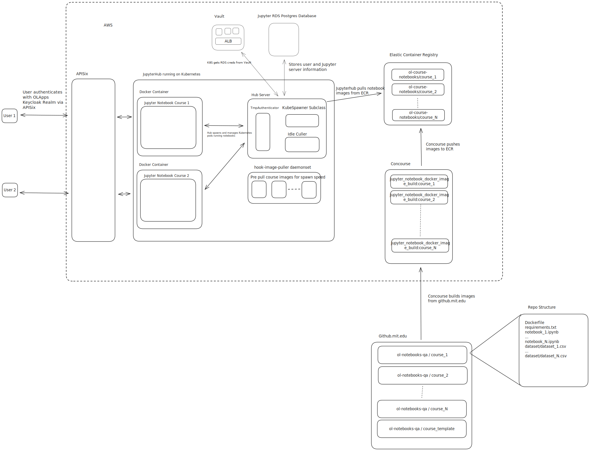

Architecture

Image Building
https://github.mit.edu/ol-notebooks is an org containing a template repository and all course repositories. Each course repository contains a Dockerfile and requirements.txt file alongside any Jupyter notebooks and data.
Concourse runs a parameterized job which pulls from the course repositories, constructs a docker image to bundle everything together and push to a private ECR repository we maintain. The dockerfiles use the official Jupyter pytorch docker images as a base and install tensorflow as well. The code to provision the pipelines is here and the Pulumi code to set up the ECR repository is here.
Jupyterhub
Jupyterhub will use the KubeSpawner library (with some very slight modifications to enable image selection via query param) to allow users to start up and interact with a set of images we maintain. For courses, this will involve Jupyterhub starting up a notebook server for the user by pulling the corresponding course image from ECR.
The backing database is a Postgres RDS instance.
Images are pre-pulled via continuous-pre-puller daemonsets. This is currently configured to pull all 4 existing images we build and maintain via specification of an extraImages block.
Jupyterhub domains are currently gated by an SSO login to the olapps Keycloak realm. Once authenticated with Keycloak, Jupyterhub is set up to use the TmpAuthenticator class. When accessing the /tmplogin endpoint provided by the authenticator, Jupyterhub will unconditionally authenticate users as a random UUID. This ensures that users can spin up ephemeral notebooks provided they are able to authenticate with MIT Learn.
Culling is performed via the jupyterhub-idle-culler configured via Helm chart. It currently culls both running, inactive servers as well as users. Culling users is important as we will accumulate UUID-keyed users and sessions in the database over time.
Monitoring
We maintain a Grafana dashboard which shows some basic metrics about the Jupyterhub deployment. This includes:
kube_pod_container_info: shows which images notebook containers are currently running.kube_pod_container_status_restarts_total: shows how many times notebook containers have restarted. This being non-zero may be indicative of OOMKills.
Authoring Workflow
Adding a New Course
At the moment, adding a new course involves a few manual steps:
- Create a new repository in the ol-notebooks org using the template repo.
- Author your changes. If you started from the template repo, the only required changes you'll need to make are adding your notebooks and data, adding any dependencies to either requirements.txt or the Dockerfile, and ensuring that the Dockerfile copies your notebooks and data into the ${NB_USER} home directory. Sometimes this will be done for you by the course authors.
- Here's an example of a PR which adds a notebook and data files to a fresh course repo: https://github.mit.edu/ol-notebooks/UAI_SOURCE-UAI.ST.1-1T2026/pull/1
- Note that there's a 100mb limit on files checked into the repo. If the course requires larger data files, they need to either be hosted externally or compressed and unzipped at runtime.
- Make changes to ol-infrastructure to add a new image build job in Concourse. This involves adding a new job to the jupyter_courses.py file and provisioning the new pipeline via fly command. Additionally, add the new image to the QueryStringKubeSpawner's
KNOWN_IMAGESin dynamicImageConfig.py and toCOURSE_NAMESin JupyterHub's Pulumi code.- If the notebook requires GPU resources, also add the new course to the
GPU_ENABLED_COURSESindynamicImageConfig.py - Here's an example PR which added a new course called
uai_source-uai.intro: https://github.com/mitodl/ol-infrastructure/pull/3630
- If the notebook requires GPU resources, also add the new course to the
- Apply your ol-infrastructure changes to the dev/stage/prod environments and unpause your new Concourse job to start building the image.
- Once the image is built and pushed to ECR, you should be able to start a new notebook server using the new image. You can construct the URL using the following format:
https://nb.learn.mit.edu/tmplogin?course=<IMAGE_TAG>¬ebook=<URL_ENCODED_PATH_TO_NOTEBOOK_FILE>.- For example, if your image URI is
610119931565.dkr.ecr.us-east-1.amazonaws.com/ol-course-notebooks:uai_source-uai.introand your notebook is atlectures/lecture1/mod5_lec1.ipynb, the URL would behttps://nb.learn.mit.edu/tmplogin?course=uai_source-uai.intro¬ebook=lectures%2Flecture1%2Fmod5_lec1.ipynb.
- For example, if your image URI is
- Lastly, open the link and run the entire notebook. This will help you catch any dependency issues or let you know if the notebook uses too much memory to execute. See the Troubleshooting section for more details on common failure modes you might encounter.
Updating an Existing Course
The steps for updating a new course are a subset of the steps for adding a new course:
- Author your changes in the course repo. If it is an update to an existing course, it should already have a Concourse build pipeline which will automatically attempt to build an updated image.
- Once the image is built, you should be able to start a notebook server with the updated image automatically. If you adjusted the notebook directory structure, you may need to construct a new URL, but you will not need to make any additional infrastructure changes.
- Test the updated image by running through the notebook as you would for a new one.
Troubleshooting
If you run into issues attempting to run a course image, here are some common things to check:
- If you get the wrong image when you log in, verify that you've specified the right course parameter and that the value is in
KNOWN_IMAGESindynamicImageConfig.py. - If the image starts but you get a 404, verify that the notebook path is correct and URL encoded.
- You may need to change the
COPYcommand in the dockerfile depending on the file structure of the repo. By default it expects all files to be in the root and handles copying it correctly, but by convention existing courses use file structures likeassignments/assignment1/mod1_assign1.ipynb, which requires a Dockerfile change. - If a notebook starts misbehaving while you're running code, it may be an OOMKill. This can manifest in a few ways such as being unable to run more code, or a popup mentioning that the file on disk has changed unexpectedly.
- Validating this directly is tricky and the most direct way to validate it is by watching
topin a shell on the pod running your notebook. However, for cases where the OOMKill results in the pod restarting, it should appear on this graph - The code itself may have issues. The specific way it manifests varies widely, but a few common ones are:
- Missing dependencies, resulting in import errors. If an inline
!pip installresolves the issue, add the pinned dependency to requirements.txt. - Missing data files, resulting in a
FileNotFoundError. Typically this involves asking the course authors to provide you with the data, or ensuring that the file is where the code expects it to be. - GPU-related issues when using PyTorch or Tensorflow.
- Notebooks that use Tensorflow features may need to use a Tensorflow-specific base image. Modify the
FROMdirective in the course's Dockerfile as seen here - Ensure that if a course needs a GPU-enabled node that the course it is added to the
GPU_ENABLED_COURSESset in dynamicImageConfig.py
- Notebooks that use Tensorflow features may need to use a Tensorflow-specific base image. Modify the
- Code output seems suspicious or incorrect when compared to the provided notebook content. Sometimes this is obvious (e.g. a plot that looks nonsensical), other times it may be more subtle (e.g. a model training to suspiciously low accuracy). In these cases, it's best to reach out to the course authors for help if you're not an expert in the course material.